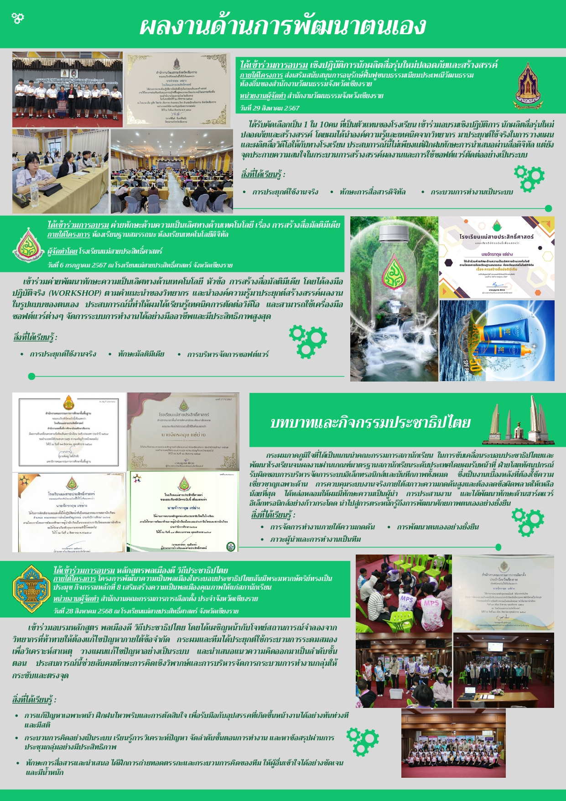
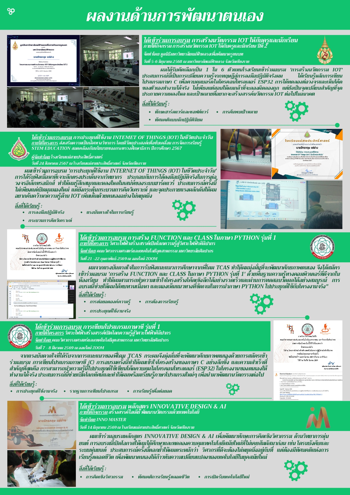

🚀 แนวทางการเลือกและจัดเกียรติบัตร
- คัดเลือกเฉพาะที่สอดคล้อง: เลือกค่ายวิชาการ อบรม หรือเกียรติบัตรที่มีความเกี่ยวข้องกับคณะและสาขาที่จะสมัคร ไม่ควรใส่ทุกใบที่มีอย่างไร้ทิศทาง
- การอธิบายทักษะที่ได้รับ: ระบุให้ชัดเจนว่าการเข้าร่วมกิจกรรมนั้นๆ ช่วยพัฒนาทักษะด้านใด เช่น ทักษะการปฏิบัติงานจริง (Hands-on) หรือความรู้เฉพาะทาง
- น้ำหนักของเกียรติบัตร: ให้ความสำคัญกับค่ายที่มีกระบวนการคัดเลือก (มีประกาศนียบัตรผ่านการอบรมอย่างเป็นทางการ) มากกว่าการอบรมระยะสั้นทั่วไป
เทคนิคการนำเสนอให้กรรมการประทับใจ
- เล่าเรื่องผ่านมุมมองการพัฒนา: แสดงให้เห็นลำดับขั้นการเรียนรู้ (เช่น เริ่มจากความสนใจ สู่การเข้าร่วมค่าย และต่อยอดมาเป็นโปรเจกต์ของตัวเอง)
- จัดวางองค์ประกอบให้สะอาดตา: จัดเรียงเกียรติบัตรขนาดพอดี ไม่เล็กหรือใหญ่จนเกินไป พร้อมใส่ชื่อกิจกรรมและวันที่ได้รับให้ครบถ้วน
💡 เคล็ดลับเพิ่มเติม (Pro Tip)
กิจกรรมพัฒนาตัวเองคือเครื่องพิสูจน์ว่าเราเป็นคน "Active" และกระตือรือร้นในการเรียนรู้อยู่เสมอ เลือกกิจกรรมที่แสดงถึง Passion ของเราอย่างแท้จริงครับ!
